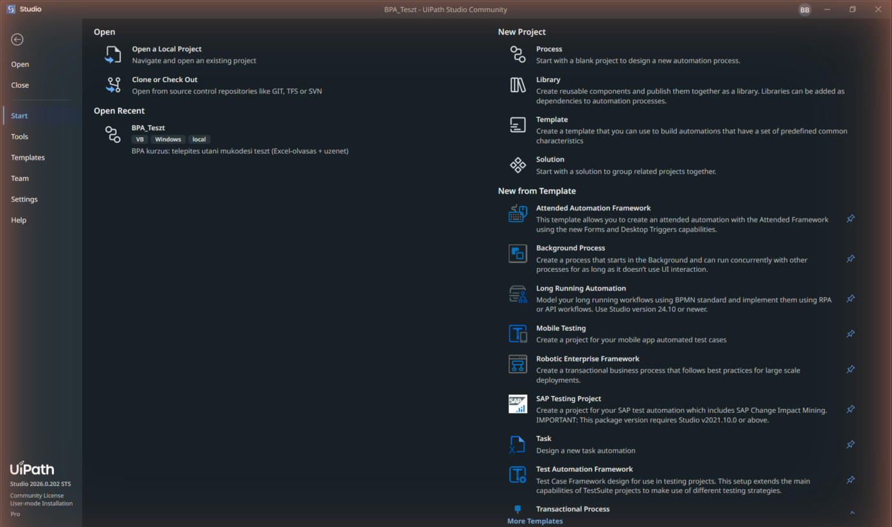
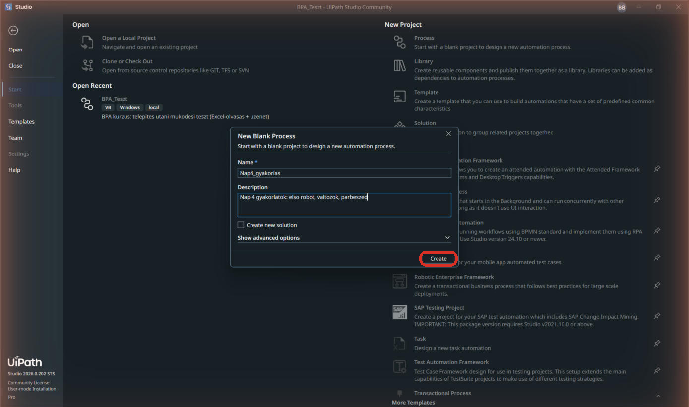
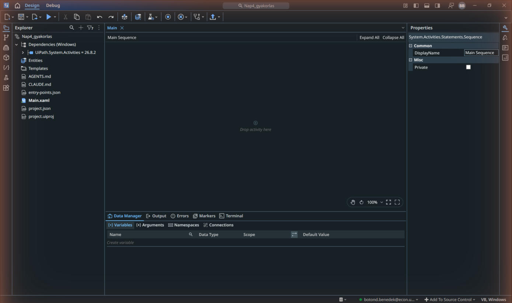
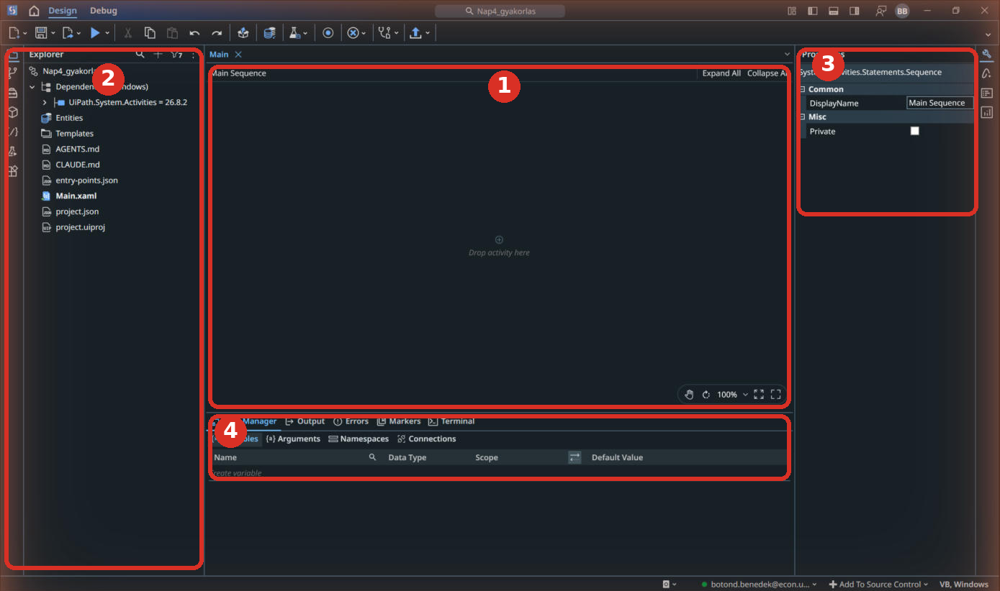
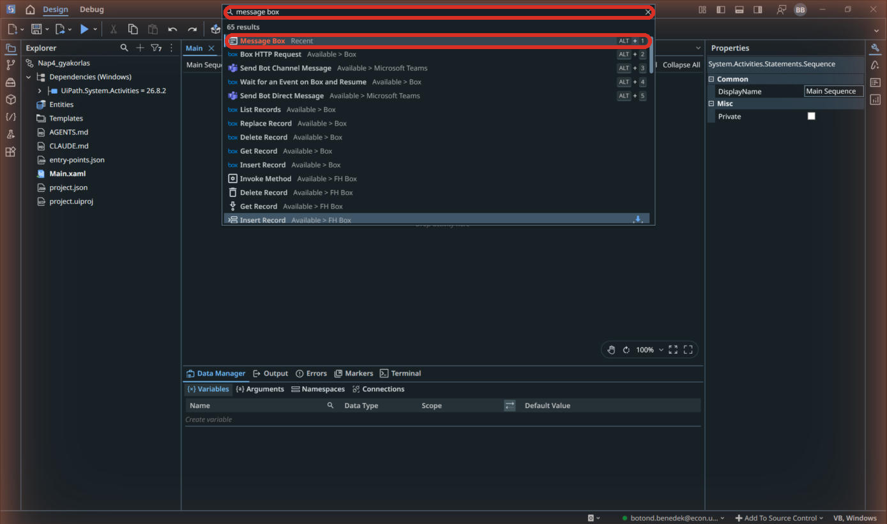
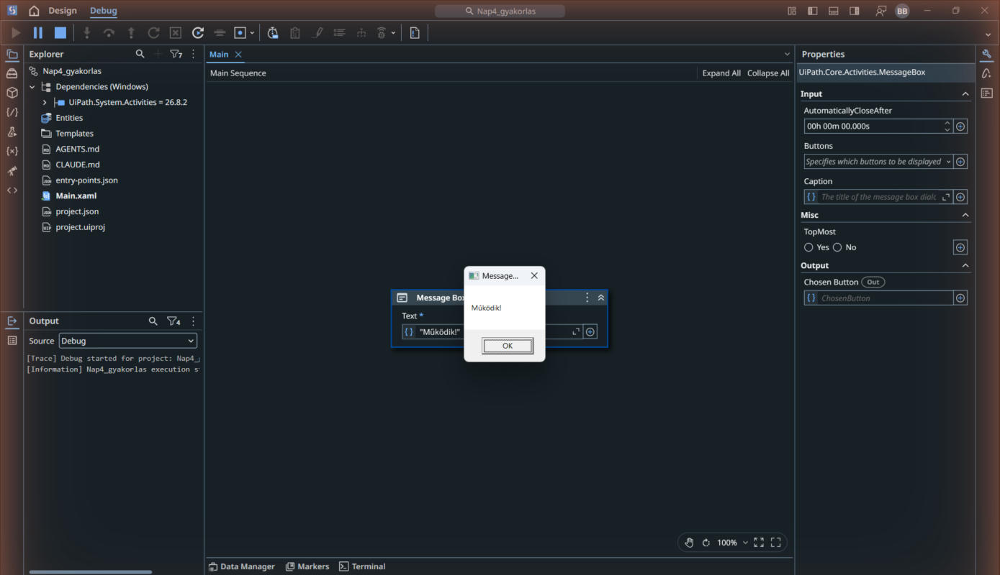

A munkatér négy eleme, és az első Run
Nem tanuljuk végig az eszközt: megtanuljuk azt a négy dolgot, amivel ma robotot építesz.
- fut a Studio a gépeden, és tudod, mi hol van benne: ennyi kell a mai naphoz;
- létrehoztál egy üres folyamatot, és ismered a munkatér négy kulcselemét;
- tudod, hova nyúlj, ha eltűnik egy panel.
Gyors ellenőrzés, aztán irány a terep
A Studio telepítését az első nap UiPath-fejezete vezeti végig. Ha még nem készültél el vele, kövesd először azt az útmutatót. Itt az aktivitáskeresőt, a tervezővásznat, a Properties panelt és a futtatást ismered meg.
- Indítsd el a Studiót. Válaszd a Process projektet, neve legyen
Nap04_gyakorlas, helye a saját, helyiBPA_kurzusmappád. A kompatibilitás Windows, a kifejezések nyelve VB.NET / Visual Basic legyen. Ez fontos: a maiCInt,CDblésIf(...)kifejezések ehhez a nyelvhez tartoznak. Kattints a Create gombra; várd meg a csomagok betöltését.
A Studio kezdőképernyője; jobbra fent a New Project, bal alul a Community License felirat 
A New Blank Process párbeszéd kitöltve, Create gombbal - Ismerd meg a munkateret. Középen a tervezővászon (Main): ide kerülnek a robot lépései. Bal oldalt a projektfájlok. Jobb oldalt a Properties panel: a kijelölt lépés beállításai. Alul a Output / Errors sáv: a robot naplója futás közben.

Az üres tervező: projektfa, Main Sequence vászon Drop activity here felirattal, Properties panel 
A munkatér négy kulcseleme: 1 vászon, 2 projektfájlok (Explorer), 3 Properties, 4 alsó sáv (Data Manager / Output) - Aktivitást két úton adhatsz a folyamathoz: kattints a vászonra, és nyomd meg a Ctrl+Shift+T billentyűket (aktivitás-kereső), vagy kattints a vásznon a + jelre. Próbáld ki: a keresőbe írd, hogy message box, és Enterrel add hozzá az első találatot (Message Box).

Az aktivitás-kereső: beírva message box, az első találat (Message Box) kiemelve; Enterrel hozzáadod - A Message Box kártyán a Text mezőbe kattints, és írd be idézőjelekkel együtt:
"Működik!", majd nyomj Tab-ot. - Futtasd a projektet a felső Run gombbal vagy a Ctrl+F5 billentyűkkel. Az F5 hibakereső (Debug) módban futtat; a két mód nem azonos. Az első fordítás és csomagbetöltés több időt kérhet.
Felugrik egy kis ablak a Működik! szöveggel, az OK után a Studio visszavált tervező nézetbe, és az Output panelen ott a futás naplója.
Ha mást látsz: ha eltűnt egy paneled, a jobb felső panel-ikonokkal vagy a View beállításokkal kapcsolhatod vissza; ha a futtatás szürke, valószínűleg hibás egy mező: az Errors fül megmondja, melyik.

A további új projektek is Windows + Visual Basic beállítással készüljenek. Ha egy aktivitás hiányzik, nyisd meg a Manage Packages ablakot. Excelhez a UiPath.Excel.Activities, böngészőhöz a UiPath.UIAutomation.Activities, PowerPointhoz a UiPath.Presentations.Activities csomag kell. A projekteddel kompatibilis stabil verziót telepítsd, majd mentsd a módosítást. A képek felülete eltérhet a telepített verzióétól.
Az RPA-robot egy program, ami úgy dolgozik, mint egy irodai kolléga: fájlt nyit, olvas, számol, gépel, kattint. Ott éri meg, ahol egy embernek ismétlődő, szabálykövető munkája van. A mai öt kis robotod pontosan ilyen munkákat vesz át.
- A példákban ékezet és szóköz nélküli projektneveket használunk, hogy a fájlútvonalakat és kifejezéseket könnyű legyen másolni. Ha VB.NET-kifejezésre nyelvi hibát kapsz, ellenőrizd, hogy valóban Visual Basic projektet hoztál létre.
- A Text mezőben az állandó szöveg idézőjelek közé kerül, például
"Működik!". A változó értékét a változó nevével éred el, idézőjelek nélkül. A hibás kifejezést az Errors panel jelzi. - Az első futtatás sokáig tart: ez normális, csomagokat tölt és fordít; a másodiktól gyors.